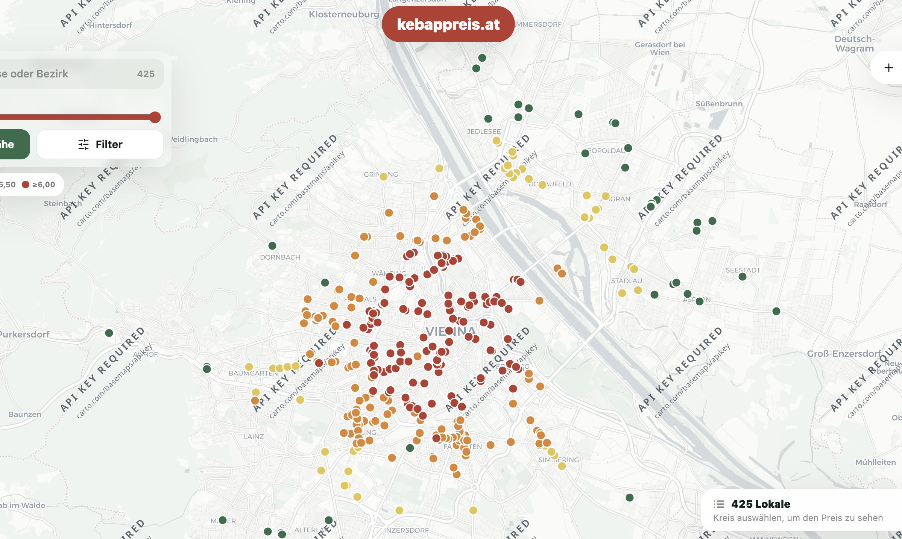

GREATER LABS · WIEN
Kebappreis.
Einblick ins Projekt.
Eine interaktive Plattform zum Finden und Vergleichen von Kebappreisen. Kartendarstellung, Standortsuche und Filter verbinden Ortsbezug mit konkreten Preisangaben.
Projekt besprechen
Die Aufgabe.
Preisinformationen sind besonders nützlich, wenn sie mit einem Ort verbunden sind. Die Anwendung macht Lokale auf einer Karte zugänglich und unterstützt die Suche nach passenden Angeboten.
Die Umsetzung.
Zum Projektumfang gehören Kartendarstellung, Standortsuche, Filter und Community-Meldungen. Nutzer können die Darstellung eingrenzen und einzelne Standorte auswählen, statt nur eine lange Liste zu durchsuchen.
Interaktion mit Daten.
Die Karte übernimmt die räumliche Orientierung. Suche und Filter ergänzen sie für gezielte Fragen. Die Herausforderung der Oberfläche liegt darin, diese Einstiege verständlich zusammenzuführen.
Das Ergebnis.
Eine nutzbare Webplattform, die Preisvergleich und Standortbezug miteinander verbindet. Der öffentliche Quellcode bietet zusätzlich einen Einblick in die technische Umsetzung.
Projekt entdecken.
Live ansehen ↗ Mehr zur passenden Leistung →Einblick in den Code.
Öffentliches Repository ↗Was möchtest du umsetzen?
Eine kurze Beschreibung der Aufgabe, des bestehenden Systems und des Zeitrahmens reicht für den ersten Austausch.
Projekt anfragen